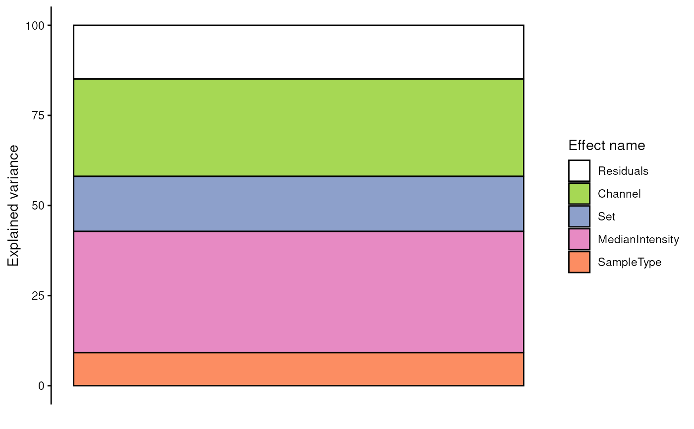
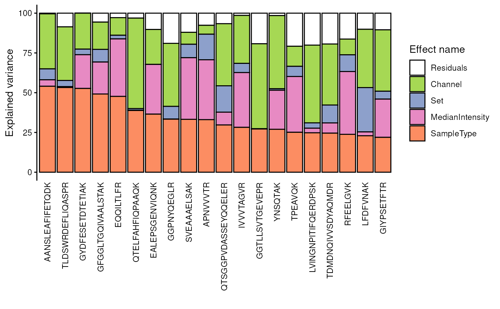
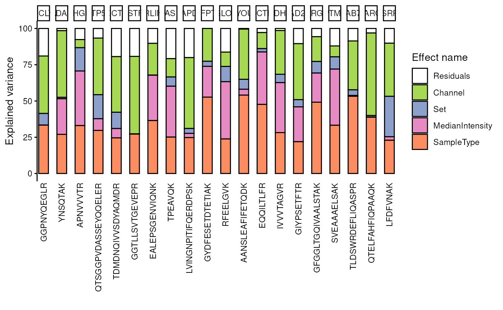
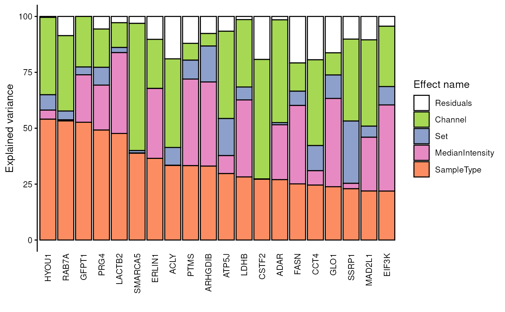

Analysis of variance for single-cell proteomics
Source:R/ScpModel-VarianceAnalysis.R
ScpModel-VarianceAnalysis.RdAnalysis of variance investigates the contribution of each effects in capturing the variance in the data. Analysis of variance is part of the scplainer workflow.
Usage
scpVarianceAnalysis(object, name)
scpVarianceAggregate(varianceList, fcol)
scpVariancePlot(
varianceList,
effect = "Residuals",
by = "percentExplainedVar",
top = Inf,
decreasing = TRUE,
combined = TRUE,
fcol = NULL,
colourSeed = 1234
)Arguments
- object
An object that inherits from the
SummarizedExperimentclass. It must contain an estimatedScpModelin its metadata.- name
A
character(1)providing the name to use to retrieve the model results. When retrieving a model andnameis missing, the name of the first model found inobjectis used.- varianceList
A list of tables returned by
scpVarianceAnalysis().- fcol
A
character(1)indicating the column to use for grouping features. Typically, this would be protein or gene names for grouping proteins.- effect
A
character(1)used to filter theb results. It indicates which effect should be considered when sorting the results.- by
A
character(1)used to filter the results. It indicates which variable should be considered when sorting the results. Can be one of: "SS", "df", or "percentExplainedVar".- top
A
numeric(1)used to filter the results. It indicates how many features should be plotted. Whentop = Inf(default), all feature are considered.- decreasing
A
logical(1)indicating whether the effects should be ordered decreasingly (TRUE, default) or increasingly (FALSE) depending on the value provided byby.- combined
A
logical(1)indicating whether the results should be combined across all features. WhenTRUE, the barplot shows the explained variance for the complete dataset.- colourSeed
A
integer(1)providing a seed that is used when randomly sampling colours for the effects. Change the number to generate another colour scheme.
Running the variance analysis
scpVarianceAnalysis() computes the amount of data (measured as
the sums of squares) that is captured by each model variable, but
also that is not modelled and hence captured in the residuals. The
proportion of variance explained by each effect is the sums of
squares for that effect divided by the sum of all sums of squares
for each effect and residuals. This is computed for each feature
separately. The function returns a list of DataFrames with one
table for each effect.
scpVarianceAggregate() combines the analysis of variance results
for groups of features. This is useful, for example, to
return protein-level results when data is modelled at the peptide
level. The function takes the list of tables generated by
scpVarianceAnalysis() and returns a new list of DataFrames
with aggregated results.
Exploring variance analysis results
scpAnnotateResults() adds annotations to the component
analysis results. The annotations are added to all elements of the
list returned by scpComponentAnalysis(). See the associated man
page for more information.
scpVariancePlot() takes the list of tables generated by
scpVarianceAnalysis() and returns a ggplot2 bar plot. The
bar plot shows the proportion of explained variance by each effect
and the residual variance. By default, the function will combine
the results over all features, showing the effect's contributions
on the complete data set. When combine = FALSE, the results
are shown for individual features, with additional arguments to
control how many and which features are shown. Bars can also be
grouped by fcol. This is particularly useful when exploring
peptide level results, but grouping peptides that belong to the
same protein (note that you should not use scpVarianceAggregate()
in that case).
References
scplainer: using linear models to understand mass spectrometry-based single-cell proteomics data Christophe Vanderaa, Laurent Gatto bioRxiv 2023.12.14.571792; doi: https://doi.org/10.1101/2023.12.14.571792.
See also
This function is part of the scplainer workflow, which also consists of ScpModel-Workflow to run a model on SCP data upstream of analysis of variance, and ScpModel-DifferentialAnalysis and ScpModel-ComponentAnalysis to explore the model results.
scpAnnotateResults() streamlines the annotation of the analysis
of variance results.
Examples
data("leduc_minimal")
####---- Run analysis of variance ----####
(var <- scpVarianceAnalysis(leduc_minimal))
#> DataFrameList of length 5
#> names(5): Residuals Channel Set MedianIntensity SampleType
####---- Annotate results ----####
## Add peptide annotations available from the rowData
var <- scpAnnotateResults(
var, rowData(leduc_minimal), by = "feature", by2 = "Sequence"
)
####---- Plot results ----####
## Plot the analysis of variance through the whole data
scpVariancePlot(var)

## Plot the analysis of variance for the top 20 peptides with highest
## percentage of variance explained by the cell type
scpVariancePlot(
var, effect = "SampleType", top = 20, combined = FALSE
)

## Same but grouped by protein
scpVariancePlot(
var, effect = "SampleType", top = 20, combined = FALSE, fcol = "gene"
)

####---- Aggregate results ----####
## Aggregate to protein-level results
varProtein <- scpVarianceAggregate(var, fcol = "gene")
scpVariancePlot(
varProtein, effect = "SampleType", top = 20, combined = FALSE
)
